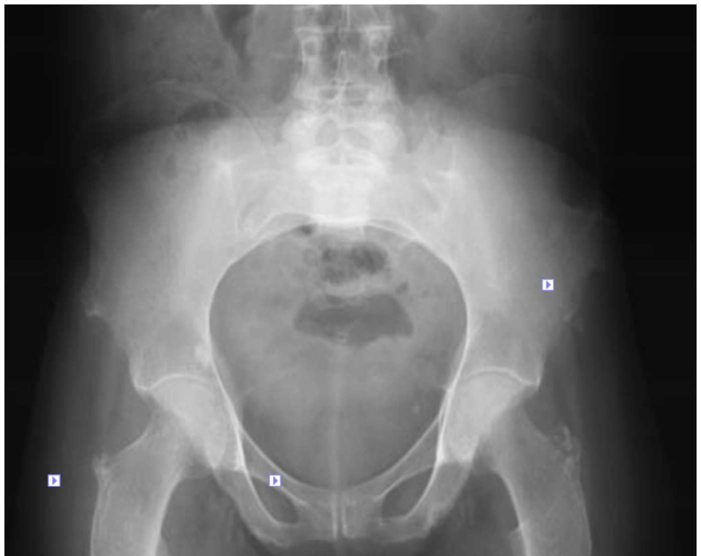
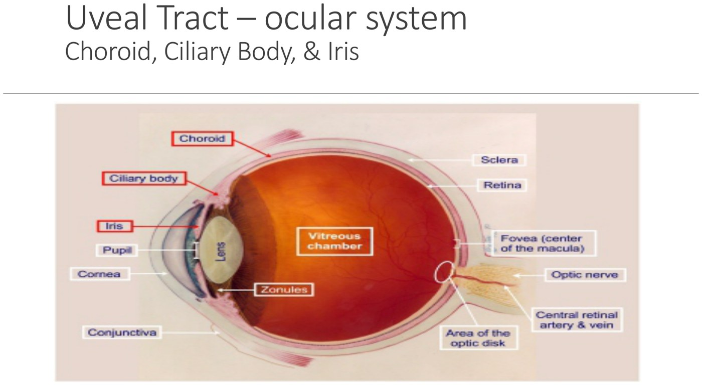
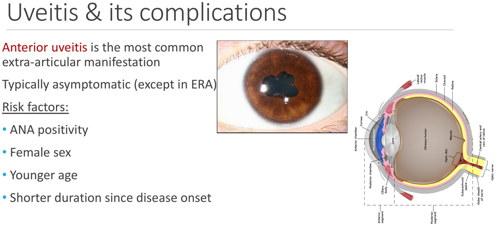
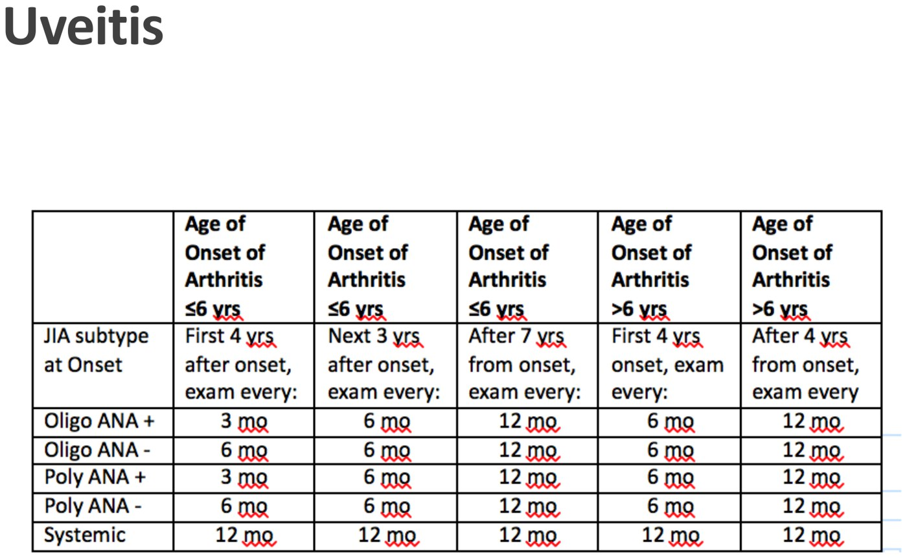
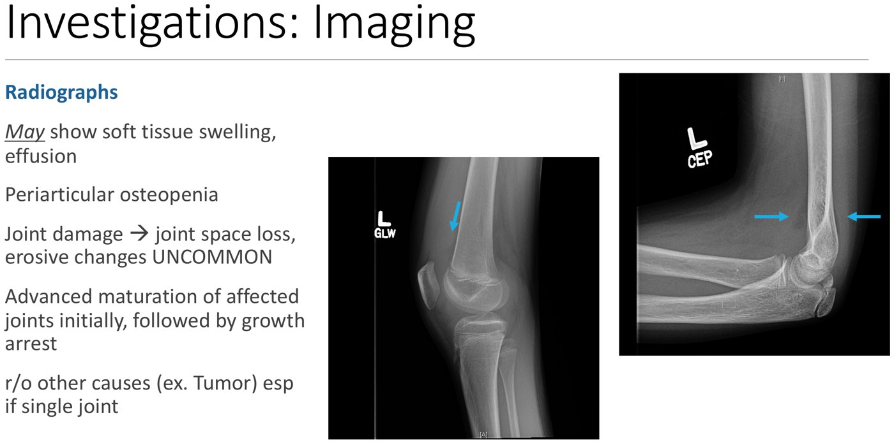
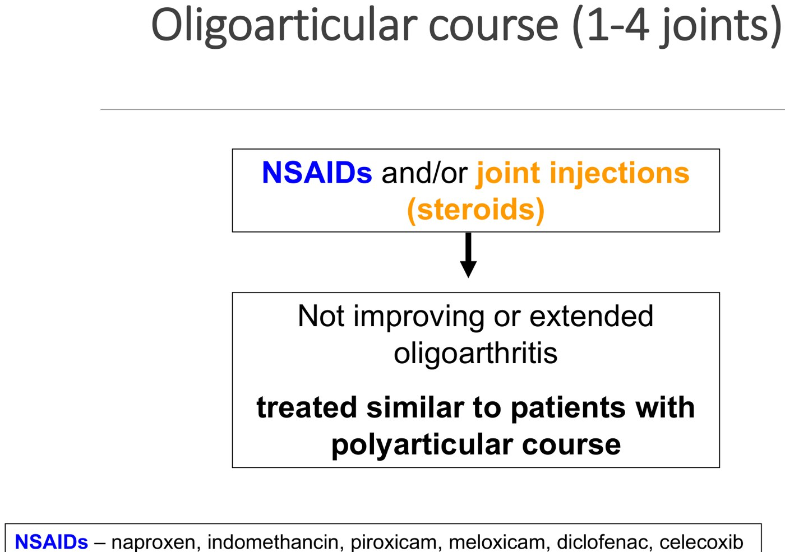
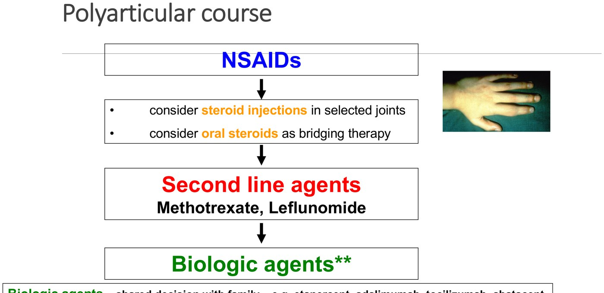
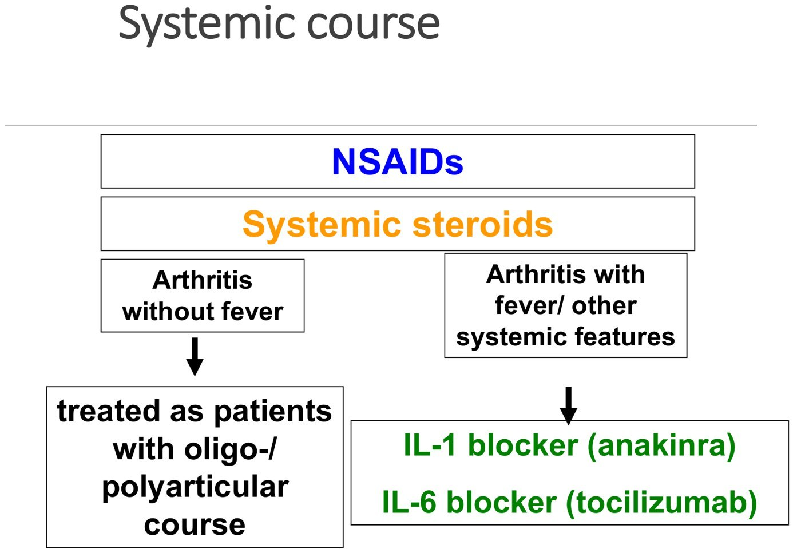

Juvenile Idiopathic Arthritis
- JIA = onset < 16 years, arthritis in ≥ 1 joint, lasting > 6 weeks, other causes excluded. About 1 in 1,000 children; the commonest chronic rheumatic disease of childhood. A clinical diagnosis of exclusion; blood work and imaging are adjuncts.
- Oligoarticular (≤ 4 joints in the first 6 months) is the commonest: a girl aged 1–3 with a painless limp and a swollen knee or ankle. Almost never starts in the hip: a lone hip means look for something else.
- Uveitis is the commonest extra-articular feature: anterior and silent (no red eye) except in enthesitis-related arthritis. Risk: ANA positive, girls, young, early in the disease. It doesn't follow the joints, so every child needs regular slit-lamp screening.
- Systemic JIA (Still's): quotidian spiking fevers ≥ 39°C, an evanescent salmon rash, arthritis (may come later), organomegaly, serositis. The only subtype that can kill: macrophage activation syndrome (a cytokine storm). Send that child to the ED.
- Treatment by joint count: oligo = NSAID (naproxen) and/or joint injection; poly = NSAID, bridging steroids, methotrexate (first DMARD), then a biologic; systemic = steroids, IL-1 or IL-6 blockers. Primary care: baseline bloods, start naproxen, refer to rheumatology and the eye doctor.
Learning Objectives
- Describe the diagnostic criteria and classification of JIA.
- Identify the extra-articular manifestations of juvenile inflammatory arthritis.
- Describe the expected test results in JIA (CBC, ESR/CRP, ANA, RF, HLA-B27) and when to order them.
- Compare treatment in children vs adults, and know when DMARDs and biologics are considered.
Two recordings (41 min) by Dr. R. Berard (pediatric rheumatology, Children's Hospital, LHSC): diagnosis, subtypes and complications, then pGALS, the workup and treatment; plus six practice questions. The adult approach is in 11.3; the limping child in 10.9. Photographs of children are left out.
Diagnosis and Subtypes
Children don't say “my joint is stiff”; parents notice what they've stopped doing.
What JIA Is and How It Presents
| JIA criteria |
|---|
| 1. Onset before age 16 |
| 2. Arthritis in one or more joints |
| 3. Lasting more than 6 weeks (rules out the common short-lived childhood arthritides) |
| 4. Other causes excluded (a diagnosis of exclusion) |
- Epidemiology: JIA 0.1% (1/1,000, about 25,000 Canadian children) vs RA 1%. Most subtypes are commoner in girls. Rare before 6 months.
- Presentation: joint aches with inflammatory features: morning stiffness, better with movement, responds to NSAIDs. Usually subacute or chronic. Children keep functioning but change how: a toddler who'd started walking goes back to crawling or bum-scooting, or stops pulling up in the crib.
Constitutional symptoms, acute onset, severe pain, can't walk, night pain that wakes them, or a joint that's very tender or red. These point to infection, malignancy (leukemia, bone tumours) or an orthopedic problem rather than JIA (systemic JIA is the exception for fever).
The Seven Subtypes

| Subtype | Who | Features |
|---|---|---|
| Oligoarticular (≤ 4 joints in the first 6 months) | Girls 1–3 (under 6); F:M 4:1 | 1–2 large joints (knee, ankle; wrist, elbow), warm and swollen but not very painful: a “painless limp”. Extremely uncommon in the hip. Highest uveitis risk. |
| Polyarticular, RF negative (≥ 5 joints in the first 6 months) | Girls (3:1); two peaks: 2–5 and 10–14 | Insidious; morning/post-inactivity stiffness ≥ 60 min; fatigue. Younger children: fewer joints, can be asymmetric. |
| Polyarticular, RF positive | Teenage girls; only 3–5% of JIA | Many joints (20–30), symmetric: like adult RA |
| Systemic (Still's disease) | 10%; all ages; M = F | Fever, rash, arthritis; the only one that can be life-threatening (below) |
| Enthesitis-related | 10%; the only one commoner in boys, usually > 10 | “The baby brother of ankylosing spondylitis”: enthesitis (Achilles), sacroiliitis (spine itself rarely), dactylitis, lower-limb large joints. HLA-B27 in ~50% (vs 80–90% in adult AS); 30% go on to AS. Symptomatic (painful red) uveitis. Family history of AS, IBD, psoriasis, uveitis, reactive arthritis. Good prognosis unless axial. |
| Psoriatic | 10%; biphasic (young and preteen) | Most don't have psoriasis yet, so look for a first-degree relative with psoriasis, nail pitting, onycholysis, dactylitis (and check the umbilicus for plaques) |
| Undifferentiated | 15% | Fits none, or 2 or more categories (e.g. an 8-year-old girl with oligoarthritis, a family history of psoriasis and HLA-B27) |
Oligoarticular course: 1/3 never involve another joint (may remit for good); 1/3 add a joint or two but stay at ≤ 4; 1/3 go on to many joints, “extended oligoarthritis”, which behaves like polyarthritis.

Systemic JIA (Still's Disease)
Named after Sir George Frederic Still (1897); the adult version is adult-onset Still's disease. It may eventually be reclassified as an autoinflammatory disease. These children are often admitted first for presumed infection or leukemia.
| Feature | What it looks like |
|---|---|
| Fever | Dramatic, ≥ 39°C, once daily (quotidian) or twice daily, peaking late afternoon/early evening, often dipping below normal after. Looks very unwell with fever, rallies between. |
| Rash | Evanescent, salmon-coloured, often only with the fever; lasts hours |
| Arthritis | Often only joint pain without swelling early; effusions come later, which makes the diagnosis harder |
| Other | Organomegaly (hepato-/splenomegaly), lymphadenopathy, serositis (pericardial, pleural, peritoneal), lethargy, weight loss, growth disturbance |
| Blood | Markedly abnormal: high WBC (neutrophils), high platelets, anemia; ESR/CRP always raised |
The serious complication of systemic JIA: a cytokine storm. Persistent fever, lymphadenopathy, a very sick child, raised transaminases and a very high ferritin. Serositis can also cause pericardial tamponade. Needs prompt recognition and treatment.
Complications and Uveitis
A growing skeleton and a silent eye are what make childhood arthritis different.
Musculoskeletal and Growth Complications
- Untreated synovitis: muscle atrophy, joint contracture; joint damage (narrowing, erosion) and deformity only after years untreated (unlike adults).
- Leg length discrepancy: an inflamed knee is hyperemic, which the growth plate reads as a growth spurt, so the leg first grows longer; untreated, the physis closes early and the leg ends up shorter. (Inflammation in adolescence can instead delay closure, giving a long limb.)
- General growth: slows during active disease; severe refractory disease can stunt height.
- The jaw: the TMJ is very often involved, and its growth centre sits just below the condyle. Bilateral = micrognathia; unilateral = asymmetry and deviation on opening.
Uveitis
Anterior uveitis (the iris and ciliary body; inflammatory cells in the anterior chamber) is the most common extra-articular manifestation of JIA.

The uveal tract: choroid, ciliary body, iris. From the deck.
An irregular pupil from synechiae (scar tissue tethering the iris). From the deck.| Uveitis in JIA | |
|---|---|
| Symptoms | None (no red eye, no photophobia), except in enthesitis-related arthritis, where it's painful, red, photophobic, often recurrent, so the child seeks care |
| Risk factors | ANA positive, female, young at onset, early in the disease; oligoarticular most of all (up to 20%) |
| Timing | Usually within the first 4 years; doesn't parallel the joints (the eye can drive treatment when the joints are quiet) |
| Screening | Regular slit-lamp exams, interval set by subtype, age at onset, disease duration and ANA: e.g. every 3 months for young, ANA-positive oligo or poly JIA in the first years; systemic JIA every 12 months. Toddlers need a pediatric ophthalmologist. |
| Complications | Synechiae (irregular pupil), glaucoma (disease or steroids), cataract, band keratopathy, macular edema, blindness |

Long-term morbidity: uveitis and blindness, functional disability, rarely joint replacement, growth disturbance, and still lower rates of finishing school and reaching vocational goals.
Exam, Workup and Treatment
pGALS, the blood work, the x-rays, and treatment by joint count.
pGALS: the Screening Exam
Paediatric Gait, Arms, Legs and Spine: a 2-minute, validated MSK screen designed in the UK (Dr. Helen Foster) for non-specialists. Watch the four videos (gait, arms, legs, spine) on YouTube.
| Do a pGALS when a child has… |
|---|
| Muscle, joint or bone pain |
| Is unwell with fever (+ constitutional symptoms, rash) |
| A limp |
| Delayed or regressing motor milestones (also picks up neurologic disease) |
| A chronic disease with known MSK involvement (e.g. IBD) |
What it covers: look at the spine and watch them walk (and on heels and toes); arms out straight, fists, finger opposition; MCP squeeze; wrist extension and flexion; arms up and neck movements; open the mouth (TMJ); knee and hip range; Adams forward bend (scoliosis).
Investigations
The history and exam make the diagnosis; tests support it and rule out other things.
| Test | In JIA |
|---|---|
| CBC | Systemic JIA: high WBC (neutrophils), thrombocytosis, anemia. Other subtypes: mostly normal, ± anemia of chronic disease |
| ESR, CRP | Normal or raised (always raised in systemic). Don't track joint count: 20 swollen joints with normal markers, or one knee with high ones. |
| ANA | Used to predict uveitis risk, not to diagnose JIA (and not a screening test) |
| RF | Positive in only 3–5%; for classifying and prognosis in polyarticular JIA |
| HLA-B27 | Enthesitis-related arthritis (positive in 30–50%; also reactive and IBD arthritis) |
| Liver enzymes, creatinine | Baseline before NSAIDs and other drugs |

Radiographs: effusions (here a knee and an elbow “sail sign” from fluid, not a fracture). From the deck.
Oligoarticular course. From the deck.| X-ray finding | Why it matters |
|---|---|
| Soft tissue swelling, effusion, periarticular osteopenia | Active arthritis |
| Joint damage (space loss, erosions) | Uncommon at diagnosis |
| Advanced maturation on the affected side | Unique to children: e.g. the patella ossifies around age 3, so after months of knee arthritis it may appear on that side only. Always image both sides; it hints at chronicity. |
| Later: ankylosis of the C-spine (posterior elements) and wrist; short limb or small mandible from early physeal closure | Long-standing disease |
| Rule out other causes (e.g. tumour) | Especially with a single joint |
Treatment
Aims: short term, relieve discomfort, preserve function, prevent deformity, control inflammation; long term, minimize disease and drug side effects, normal growth and development, rehabilitation, psychosocial and school support. It takes a team: pediatric rheumatologist, nurse, physio, OT, ophthalmology/optometry, family doctor or pediatrician, social worker, psychologist, the school. Non-drug: education, physio (range and fitness; these children are less active than peers), OT (splints, devices), nutrition.
| Course | Treatment |
|---|---|
| Oligoarticular (1–4 joints) | NSAIDs and/or intra-articular steroid (about equivalent; NSAIDs may have more side effects). Young children are injected under nitrous or general anesthesia; awake in clinic only from about age 10. Not improving or extended: treat as polyarticular. |
| Polyarticular | NSAIDs for symptoms; steroid injections in target joints; oral steroids as a bridge; then methotrexate (first-line second-line agent; takes ~2 months; leflunomide an alternative). 20–25% fail and need a biologic (etanercept, adalimumab, infliximab [anti-TNF], tocilizumab, abatacept), chosen with the family. |
| Systemic | NSAIDs and, for most, systemic steroids at diagnosis. Fever and systemic features: IL-1 blocker (anakinra) or IL-6 blocker (tocilizumab) first line; these transformed a disease once marked by steroid toxicity and growth failure. Arthritis left without fever: treat as oligo/poly. |
| Uveitis | With ophthalmology: steroid drops → (limited) oral steroids → methotrexate → infliximab or adalimumab |
| Enthesitis-related | Exercise and stretching; NSAIDs (may be enough if mild); DMARDs for peripheral disease; anti-TNF especially for axial disease (sacroiliitis); topical steroids for uveitis |

Polyarticular course. From the deck.
Systemic course. From the deck.Naproxen is the commonest NSAID (twice daily and comes as a liquid; indomethacin is the other liquid). All doses are weight-based. Joint injections need sedation in young children. There are fewer trials and fewer approved biologics, with slower access, than in adults. And treatment watches what adults don't have: growth and the eye.
The Two Cases and the Practice Questions
Case 1: 5-year-old girl, 3 months of knee swelling and a morning limp
Systemically well; both knees, the left wrist and many small hand joints active. If JIA: polyarticular, RF-negative (≥ 5 joints).
Primary care next steps: baseline blood work, refer to rheumatology and an optometrist/ophthalmologist, and consider starting naproxen while waiting.
Case 2: 3-year-old boy, 3 months of intermittent fevers
2 months of pain and swelling in both knees and ankles, a faint rash lasting hours; fatigued, pale, splenomegaly, effusions. First rule out infection and malignancy (ask about long-bone pain and night symptoms). If JIA: systemic JIA; the serious complication is macrophage activation syndrome.
Next steps: he's sick: send him to the emergency department (or call the rheumatologist if the diagnosis is clear, which it usually isn't).
| Practice question (Sarah, 3, right knee and left ankle for 3 months) | Answer |
|---|---|
| Most likely subtype | Oligoarticular JIA (current nomenclature; the typical age and large-joint pattern) |
| Most important step besides an ANA | Refer to ophthalmology: silent uveitis in up to 20% of oligo patients needs regular slit-lamp screening |
| First-line drug | Naproxen: twice daily, liquid |
| Two years later: both knees, ankles and wrists. Second-line agent? | Methotrexate (first DMARD in extended oligo or poly JIA) |
| Known complications | All three: leg length discrepancy (knee hyperemia), micrognathia (TMJ), vision loss (uveitis) |
| “Will she outgrow it?” | Even in oligoarthritis, at least 50% still need care for arthritis as adults |
Built from Dr. R. Berard's “Juvenile Idiopathic Arthritis” deck (parts 1 and 2), its two recordings and the module's six practice questions. Photographs of children (the rash, fever chart, micrognathia, clinical pGALS images, nail and skin photos) and stock images are left out and described in the text. Notes: the deck writes “Sir George Edward Still”; the pediatrician who described the disease in 1897 was Sir George Frederic Still. The deck's subtype table writes oligoarthritis as “< 4 joints” and polyarthritis as “> 5”; the ILAR definitions (and the deck's own treatment slide) are ≤ 4 and ≥ 5 in the first 6 months. The recording says HLA-B27 is positive in about half of ERA (slide 27), then “30–40%” in part 2.